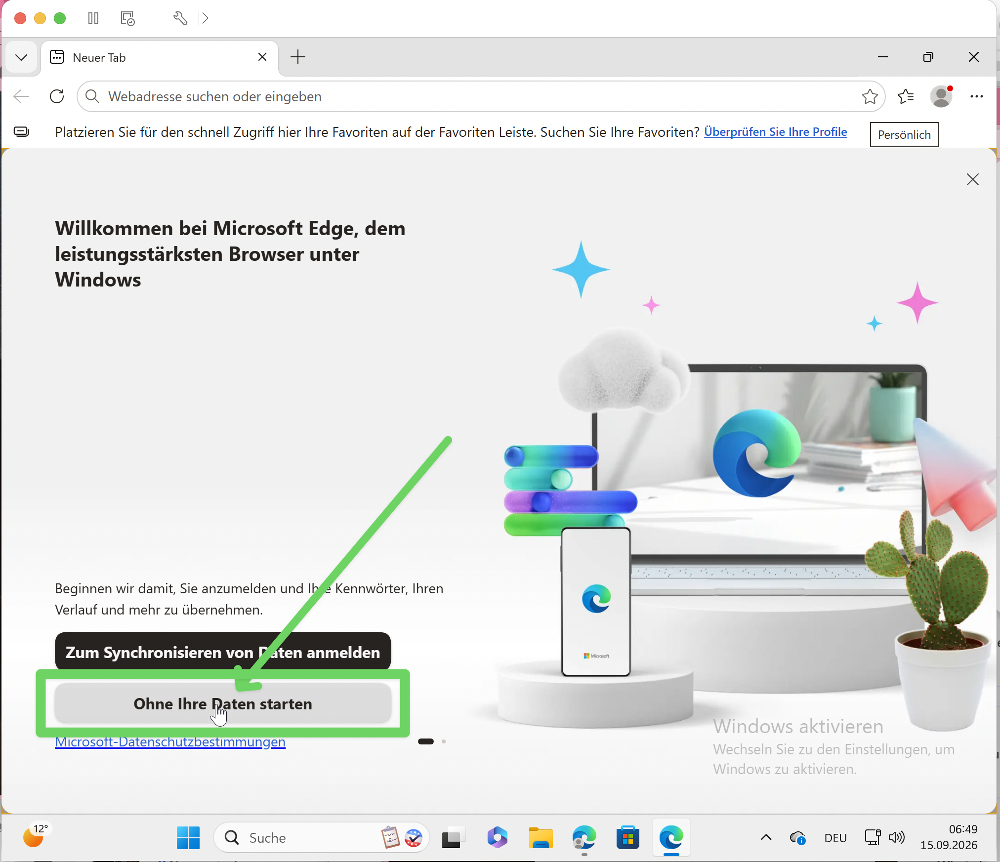
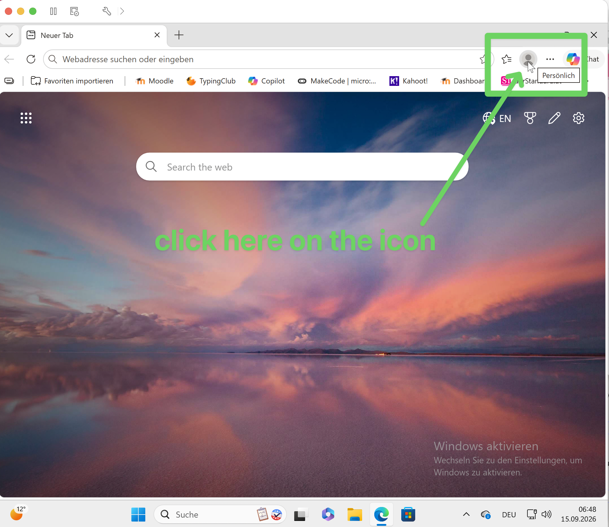
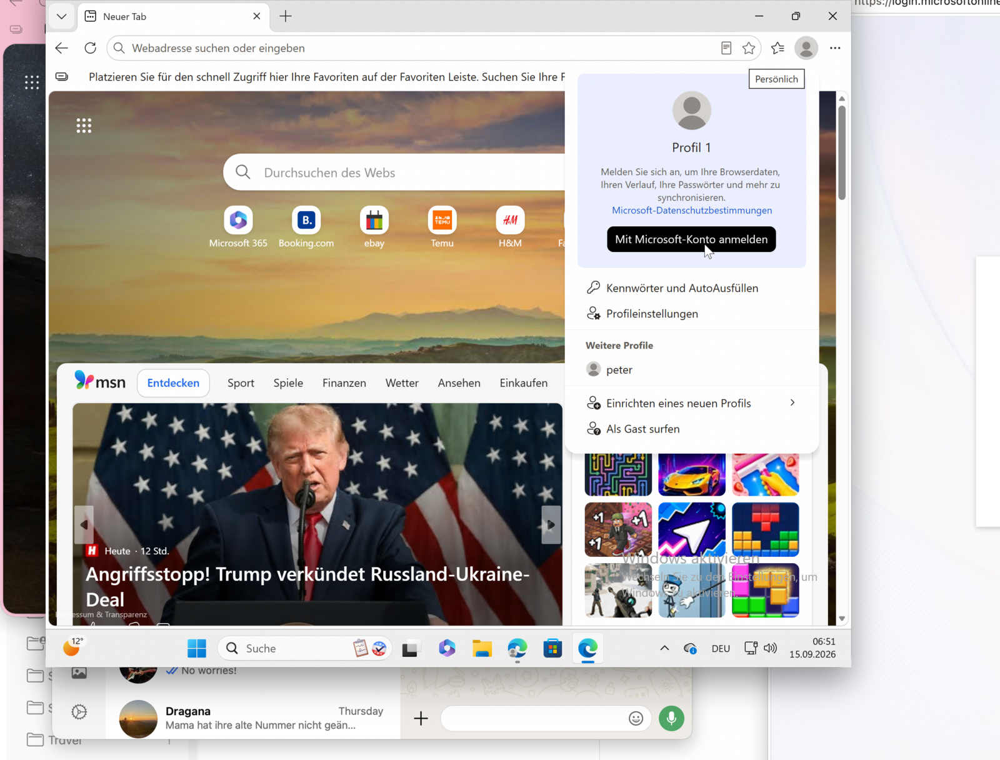
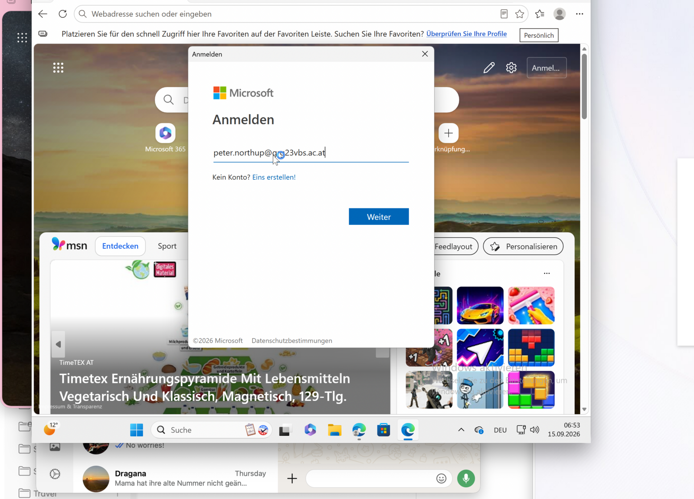

1
Computer einschalten
Computer und Bildschirm einschalten


Windows: firstname.lastname
Microsoft: firstname.lastname@grg23vbs.ac.at
Computer und Bildschirm einschalten
Taste drücken oder einmal klicken
 TASTE ODER MAUS
TASTE ODER MAUSUnten links anklicken
 ←
←firstname.lastname, Kennwort leer lassen
 firstname.lastnameKENNWORT LEER↑
firstname.lastnameKENNWORT LEER↑Auf „OK“ klicken
 ↓
↓Oben leer, unten zweimal genau gleich
 1 LEER2 NEU3 GLEICH
1 LEER2 NEU3 GLEICHAuge gedrückt halten, dann Enter oder Pfeil
 DEIN NEUES KENNWORT↓↓
DEIN NEUES KENNWORT↓↓Edge-Symbol in der Taskleiste
 ↓
↓„Ohne Ihre Daten starten“

„Alle ablehnen“

„Finish“

„Don’t allow“ oder Häkchen aus

Personen-Symbol oben rechts

„Mit Microsoft-Konto anmelden“

←firstname.lastname@grg23vbs.ac.at

firstname.lastname@grg23vbs.ac.atteams.microsoft.com öffnen
 teams.microsoft.com
teams.microsoft.com